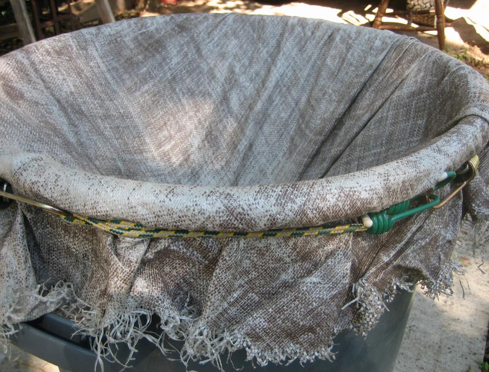

smoke ring machine!
You can make this and make it soon.
Projects rarely come as cheap, easy,
and satisfying as this...
Projects rarely come as cheap, easy,
and satisfying as this...
Let us acknowledge what is necessary to build this
machine.
32 gallon Rubbermaid plastic trash can
4' diameter cutout of tarp or other durable fabric
48" bungee cord
24" bungee cord
12" bungee cord
two 2.5" rubber washers
two 1.5" metal washers
one 1.75" long, 1/4-20 threaded standoff(long nut)
two eyebolts. 2" long, 3/4" thread length, 1/4-20 threads.
machine.
32 gallon Rubbermaid plastic trash can
4' diameter cutout of tarp or other durable fabric
48" bungee cord
24" bungee cord
12" bungee cord
two 2.5" rubber washers
two 1.5" metal washers
one 1.75" long, 1/4-20 threaded standoff(long nut)
two eyebolts. 2" long, 3/4" thread length, 1/4-20 threads.
On the bottom of the trash can, there's a
raised circle of plastic. It was put there
expressly for you to use it as a perfect place
to cut out a circle in the center of the can.
raised circle of plastic. It was put there
expressly for you to use it as a perfect place
to cut out a circle in the center of the can.

Screw one of the eyebolts into the threaded standoff. Then metal
washer, rubber washer, tarp, rubber washer, metal washer other
eyebolt. Tie a shoelace through the eyebolt for easier pulling.
washer, rubber washer, tarp, rubber washer, metal washer other
eyebolt. Tie a shoelace through the eyebolt for easier pulling.

Poke a hole in the center of your tarp,
poke the eyebolt through, and screw
it into the threaded standoff.
poke the eyebolt through, and screw
it into the threaded standoff.
Remember, eyebolt, metal washer,
rubber washer, tarp, rubber washer,
metal washer other eyebolt.
rubber washer, tarp, rubber washer,
metal washer other eyebolt.

Spread open the eyebolt on the standoff side.
I did it with vise-grips and a screwdriver.
I did it with vise-grips and a screwdriver.
Put the 24" bungee cord into the eyebolt and
squish the eyebolt back together. I used my
thumb and forefinger.
squish the eyebolt back together. I used my
thumb and forefinger.
Lay the tarp on the top of the trash
can with the business in the center.
can with the business in the center.
Now, using the 48" and the 12" bungee
cords, in an arrangement, if not exactly
like this, then one similar to, but
fundamentally inferior to, this...
cords, in an arrangement, if not exactly
like this, then one similar to, but
fundamentally inferior to, this...

Stretch the bungee cords around the
top of the trash can, just under the lip.
top of the trash can, just under the lip.
Grab the ends of the 24" bungee cord
and hook 'em to the bottom of the can.
and hook 'em to the bottom of the can.
Flip the can over and pull the tarp tight all
around, just enough to just engage the 24"
bungee cord on the inside of the can, keeping
the business in the center.
around, just enough to just engage the 24"
bungee cord on the inside of the can, keeping
the business in the center.
Get a fog machine. I use a 400 watt, 2500
cuft/minute one that costs around $40. Fill it
up, pull the string, and let it go.
cuft/minute one that costs around $40. Fill it
up, pull the string, and let it go.